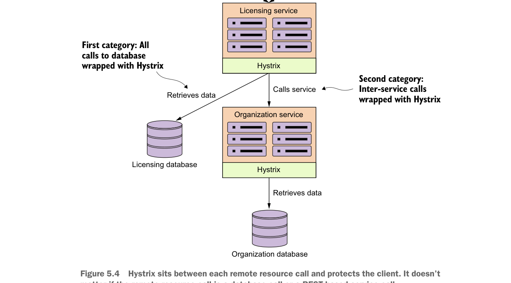

Hystrix nằm giữa mỗi lời gọi tài nguyên từ xa và bảo vệ client. Không quan trọng lời gọi tài nguyên từ xa là lời gọi cơ sở dữ liệu hay lời gọi dịch vụ dựa trên REST.
là hai loại lời gọi khác nhau, bạn sẽ thấy việc sử dụng Hystrix hoàn toàn giống nhau. Hình 5.4 cho thấy các tài nguyên từ xa mà bạn sẽ bọc bằng circuit breaker Hystrix.
Hãy bắt đầu phần thảo luận về Hystrix bằng cách trình bày cách bọc việc truy xuất dữ liệu licensing service từ cơ sở dữ liệu licensing bằng circuit breaker Hystrix đồng bộ. Với lời gọi đồng bộ, licensing service sẽ truy xuất dữ liệu của nó nhưng sẽ chờ câu lệnh SQL hoàn tất hoặc chờ hết thời gian chờ (timeout) của circuit breaker trước khi tiếp tục xử lý.
Hystrix và Spring Cloud dùng annotation @HystrixCommand để đánh dấu các phương thức của lớp Java là được quản lý bởi circuit breaker Hystrix. Khi framework Spring thấy @HystrixCommand, nó sẽ tạo động một proxy bọc phương thức đó và quản lý mọi lời gọi tới phương thức đó thông qua một thread pool gồm các thread được dành riêng để xử lý các lời gọi từ xa.